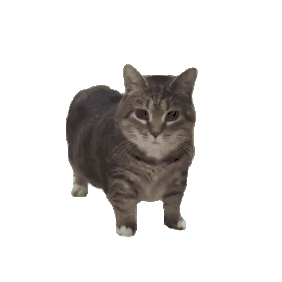
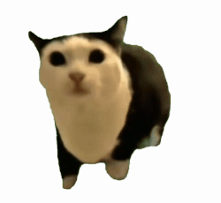

介紹二
Oiiai Cat

介紹三
踩奶貓貓

是一名來自遊戲《崩壞：星穹鐵道》的角色，因角色設定是面無表情卻做出這種動作導致爆紅。
影片觀賞
「Oiiai cat」是一個爆紅的迷因，主角是一隻名叫 Ethel 的特殊貓咪，牠因為「嗚咿咿啊咿」的魔性配音和旋轉的畫面而廣受歡迎。
這段聲音來自一名土耳其小孩翻唱遊戲《Friday Night Funkin'》風格的歌曲，經由 TikTok 傳播而走紅。
影片觀賞
踩奶貓貓原名FiFi，因為FiFi踩奶動作很像急得跺腳因此被用於扮演各種焦急的角色。
影片觀賞